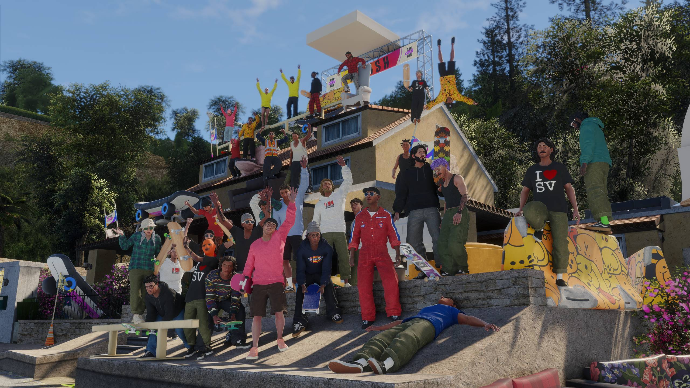

COMMUNITY EXPERIMENT / 001
A new place
to ReSkate.
Bringing the ReSkate Windows runtime to a jailbroken PS5. One homebrew app. An open experiment. A lot left to discover.
Past shaders. Post-load crash under investigation.
Gameplay unverified. Hangs and crashes remain.
Progress you can see.
Limits you should know.
This is a technical preview for testers, not a finished port. Here’s exactly where the experiment stands.
A proper home-screen app.
Its own ReSkate name, title ID, and official blue RE icon. The artwork has been confirmed on the console.
01The graphics path works.
Direct3D 12 device, present, fences, frame-latency, and queue synchronization probes pass. Controller 0 is detected.
02Past shaders. A new failure to investigate.
The user reported passing shaders, then CE-108255-1. Logs reach level activation and local-player join; the crash remains unresolved.
03The part that matters: skating.
No controllable skater or stable gameplay demonstrated. No verified FPS, audio, save/load, or multiplayer claims.
04A Windows runtime.
A PS5 homebrew title.
Built on the work of ReSkate, WoWPS5, Wine, vkd3d-proton, and the PS5 Vulkan/Mesa community.
ReSkate + skate.
Your compatible Windows files
Wine + bootstrap
Initialize ReSkate before the game entrypoint
vkd3d-proton
Direct3D 12 → Vulkan
RADV on PS5
Mesa’s driver, adapted for the console
One app.
Its own space.
The Windows runtime runs inside the native title. There’s no Linux desktop to boot into.
- TITLE ID
- PPSA99223
- RUNTIME DIRECTORY
- /data/reskate
- WINDOW REQUEST
- 1280 × 720
- NORMAL LAUNCH TIMER
- None
720p is a requested window size, not a measured performance result. The original WoW installation uses a separate directory and title ID.
Bring your game.
Bring your curiosity.
Exact versions matter. Start with validation, then copy to the console. A clean installation on a second PS5 still needs to be verified.
- 01
Collect the matching inputs.
Get the experimental bundle, pinned WoWPS5 base runtime, your compatible game and PC content cache, and your local Windows SDK compiler DLL.
- 02
Check everything locally.
Run the installer without
--install. It reads and hashes the selected files. The dry run makes no console connection. - 03
Copy, register, launch.
Close the game, return to the PS5 home screen, and run the copy command. Register the title with your homebrew manager. Expect experimental results.
Copy with evidence.
Explicit file manifests. SHA-256 checks. Upload readback before promotion. Completed files are verified again on a retry.
Can it compile
faster?
Keep the work it has already done.
Two caches were observed growing: vkd3d-proton’s translated shader cache and RADV’s native cache. Preserve both between runs. Neither cache growth nor a moving counter proves that loading will finish.
There is no verified fast-compilation fix for this build. The normal launch has no forced deadline; the later test passed shaders and then failed with CE-108255-1.
Understand caches and failures ↗vkd3d-proton.cache
Beside the game in the Wine prefix.
radv-shader-cache/
Inside the PPSA99223 title directory.
The useful answers.
Can I actually play ReSkate on PS5 with this?
Stable gameplay has not been demonstrated. The project reaches loading and shader compilation, but hangs and crashes remain. This release is for investigation and testing.
Is this official? Does it include the game?
No. This is an unofficial community integration built on upstream projects. It includes no skate. game data. You must supply your own compatible files. The artwork comes from the official ReSkate repository, with attribution.
Will it work with my firmware or the latest game update?
Universal compatibility is unknown. The tested game build is 25414733 with ReSkate 2.0.5; newer files are not assumed compatible. The installer rejects hashes that differ from the documented set.
Does it support online play or multiplayer?
Those features have not been tested on PS5. The integration uses offline initialization. ReSkate’s PC feature list should not be read as the PS5 port’s feature list.
Can I build it myself?
Modified sources, dependency revisions, and build notes are provided. The tested binary used a prepared Linux toolchain; a complete fresh-machine rebuild remains unverified. Start with the repository’s build documentation.
How can I help?
A confirmed fresh install, a minimal shader reproducer, or native driver diagnostics would help most. Report exact versions and observed behavior, and redact personal details. Never upload game files, your prefix, or console databases.